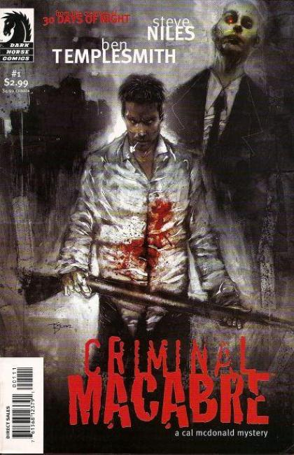

Writer: Steve Niles
Illustrators: Jim Whiting, Ben Templesmith, Kelley Jones, Kyle Hotz, Nick Stakal
43 issues 2003-2014 Dark Horse
Criminal Macabre is a comic book series starring Cal McDonald, an antihero American comic book character created in 1990 by writer Steve Niles. The character's adventures have been published by Dark Horse Comics and later IDW Publishing. Cal McDonald's first story, entitled "Big-Head", was released in 1990 as part of the anthology comic Fly in My Eye: Daughters of Fly In My Eye from Arcane Comix, with art by Jim Whiting. That story led directly to the four-part "Hairball", serialized in Dark Horse Presents #102-105 in 1996. Hairball was later printed as a one-shot comic.
Cal's subsequent appearances were in two 2002 novels, Savage Membrane, and Guns, Drugs and Monsters. In the latter, Cal relocated to Los Angeles, after following a living, severed head searching for its body.
Cal himself is akin to John Constantine, a DC Comics paranormal detective. He takes illicit drugs, and befriends a network of ghouls to assist him in his cases. Policemen do not really care to be involved with Cal.
Criminal Macabre: A Cal McDonald Mystery (Dark Horse) 5 issues in 2003-2003
Criminal Macabre: A Cal McDonald Mystery (Dark Horse) 2004
Criminal Macabre: Feat of Clay (Dark Horse) 2006
Criminal Macabre: Two Red Eyes (Dark Horse) 4 issues in 2006-2007
Criminal Macabre: My Demon Baby (Dark Horse) 4 issues in 2007-2008
Criminal Macabre: Two Red Eyes (Dark Horse) 2007
Criminal Macabre: My Demon Baby (Dark Horse) 2008
Criminal Macabre: Cell Block 666 (Dark Horse) 4 issues in 2008-2009
Criminal Macabre: Cell Block 666 (Dark Horse) 2009
Criminal Macabre: No Peace for Dead Men (Dark Horse) 2011
Criminal Macabre / The Goon: When Freaks Collide (Dark Horse) 2011
Criminal Macabre Omnibus (Dark Horse) 3 issues in 2011-2015
Criminal Macabre: They Fight by Night (Dark Horse) 2012
Criminal Macabre: Final Night (Dark Horse) 4 issues in 2012-2013
Criminal Macabre: No Peace for Dead Men (Dark Horse) 2013
Criminal Macabre: The Eyes of Frankenstein (Dark Horse) 4 issues in 2013-2013
Criminal Macabre: The Eyes of Frankenstein (Dark Horse) 2014
Criminal Macabre: The Third Child (Dark Horse) 4 issues in 2014-2014
Criminal Macabre: The Third Child (Dark Horse) 2015